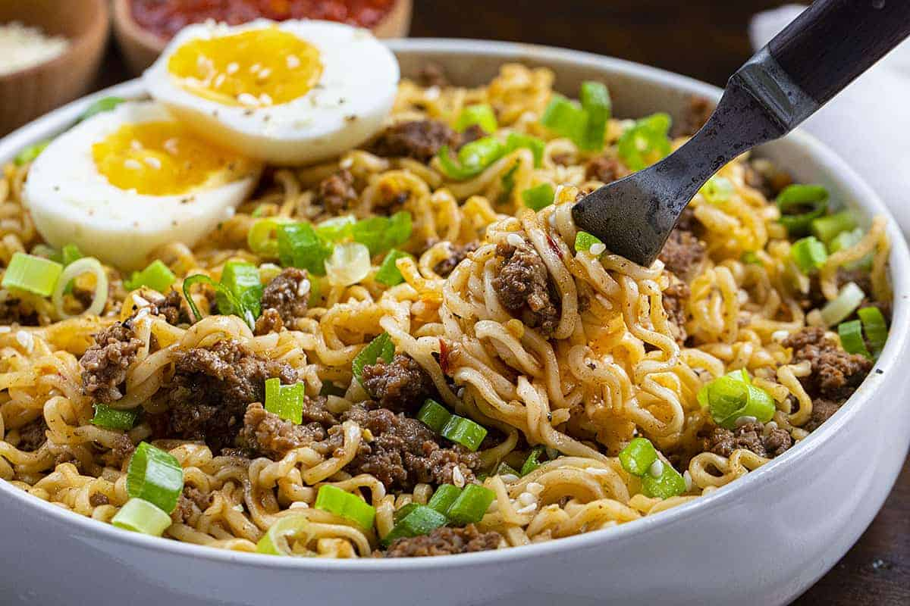

Eatin'-Good-Tonight Style Instant Noodles

Description
Eatin'-Good-Tonight Style Instant Noodles is a dish perfected by myself
deciding to elevate my swag; to dine with gravitas.
It consists of a pack of 3/$1.00 instant noodles, along with some fun stuff to spice it up.
It's also a kitchenware-economic dish, requiring but a single pot and pan to cook.
Truly an elite dish, it remains unmatched in affordability, ease of production, and taste.
Perfect for those evenings after school watching Naruto.
Ingredients
- Cheap instant noodles
- Sriracha sauce
- An egg
- French fries
- Ground beef
- Oil
- Salt
Steps
- Fill a non-stick pan with a small amount of oil and allow to heat up at medium heat. Crack an
egg in the pan and scramble. Remove the egg once cooked and set aside in a bowl
- Add a chunk of ground beef to the non stick pan. Fry and stir until cooked, adding a pinch
of salt if desired. Pour the ground beef into the same bowl as the eggs
- Next add enough oil the pan to fry some french fries and allow to heat up
- Fry some french fries and allow to de-oil on some newspaper
- Chop up the french fries and add to the bowl of eggs and ground beef
- Fill a pot with water and set on the stove to boil at medium-high heat
- Once the water is boiling add a pack of instant noodles to the water and after about 30 seconds
stir the noodles to break them up
- Cook the noodles until they're soft yet still retain some tasteful-chewing-experience quality
- Turn off the stove and empty all but a cup-full of water from the pot
- Add about 80% of the seasoning packet that came with the instant noodles,
a squirt of sriracha sauce, and the eggs and ground beef that was set aside in a bowl
- Mix together and serve